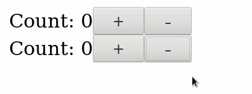
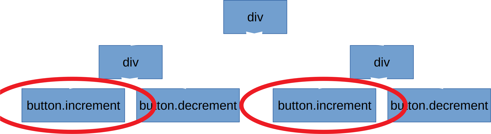
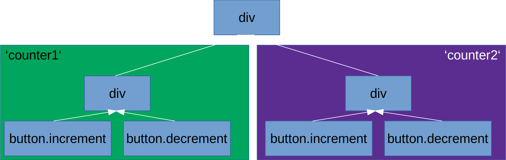
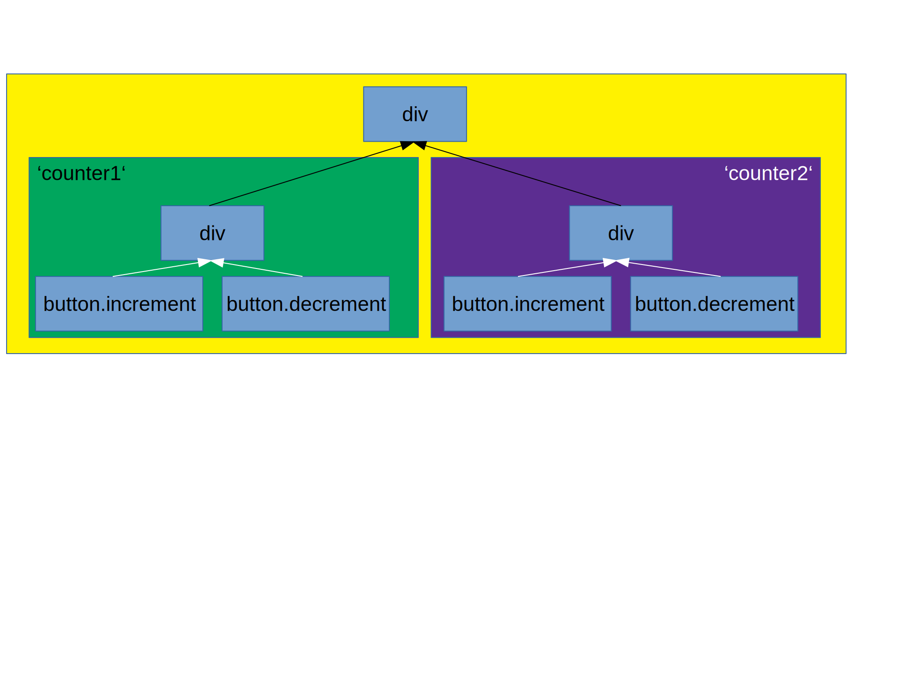
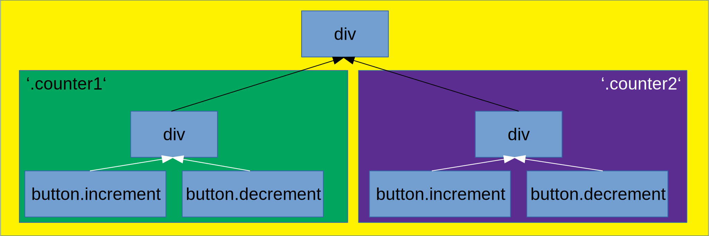
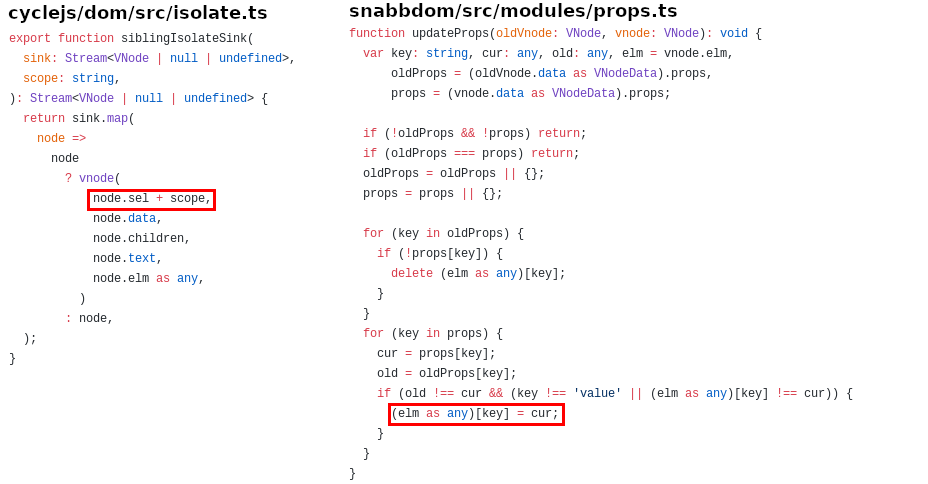

Internals of a framework
The why and how of the new Cycle.js DOM driver
What is isolation?
function Counter(sources) {
const increment$ = sources.DOM.select('.increment')
.events('click').mapTo(+1);
const increment$ = sources.DOM.select('.decrement')
.events('click').mapTo(-1);
const state$ = xs.fold((last, curr) => last + curr, 0);
const view$ = state$.map(count => div([
span(['Count: ' + count']),
button('.increment'),
button('.decrement')
]));
return {
DOM: view$
};
}What is isolation?
Resulting app

Reason
function Counter(sources) {
const increment$ = sources.DOM.select('.increment')
.events('click').mapTo(+1);
// ...
}
Solution: Isolation!
function Main(sources) {
- const counter1 = Counter(sources);
+ const counter1 = isolate(Counter, 'counter1')(sources);
- const counter2 = Counter(sources);
+ const counter2 = isolate(Counter, 'counter2')(sources);
const view$ = xs.combine(counter1.DOM, counter2.DOM)
.map(children => div(children));
return {
DOM: view$
};
}Solution: Isolation!

Total isolation
- Yellow div: no events
- Green div: events from both child buttons
- Purple div: events from both child buttons

Sibling isolation
- Yellow div: all events
- Green div: events from both child buttons
- Purple div: events from both child buttons

The problem - Issue #758

The reason - CSS classes

The goal - Less duct tape
- Unify how the different isolation methods work
- Have no visible trace of the internal functionality
- Remove undefined and surprising behavior (using a certain scope breaks isolation)
- Be extendable in the future
- Improve performance (or at least keep it on par)
Rewriting everything step by step
Step one: Rendering
- Solved Problem: VDOM Diffing
- Snabbdom
patch :: VDOM -> IO (), updates existing DOM to match VDOM
Step two: Isolation scopes
- Where can we actually do something?
const isolatedComponent = isolate(Component, scope);
// If isolation was just for the DOM
function isolate(component, scope) {
return function(sources) {
const newSource = sources.DOM
.isolateSource(sources.DOM, scope);
const sinks = component({
...sources,
DOM: newSource
});
return {
...sinks,
DOM: sources.DOM.isolateSink(sinks.DOM, scope)
};
}
}Step two: Isolation scopes
- Where can we actually do something?
Step two: Isolation scopes
- Idea: Save namespace in source and in output VDOM
class DOMSource
constructor(namespace) {
this.namespace = namespace;
}
function isolateSource(oldSource, scope) {
return new DOMSource(oldSource.namespace.concat(scope));
}
function isolateSink(sinkStream, scope) {
return sinkStream.map(rootNode => ({
...rootNode,
data: {
...rootNode.data,
isolate: this.namespace.concat(scope)
}
}));
}
}Step three: Event management
Building the bridge between APIs
- The DOM API for events looks like
element.addEventListener(type, callback) - We want it to look like
sources.DOM.events(type) - We want events not to bubble outside of their scopes